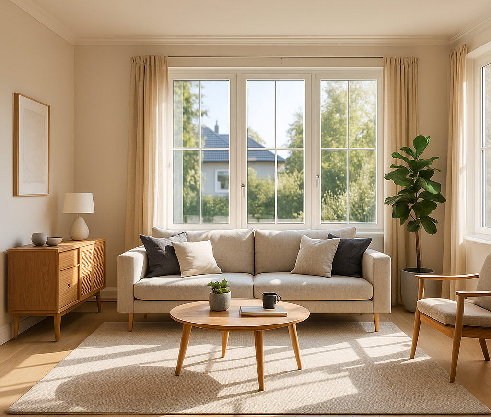
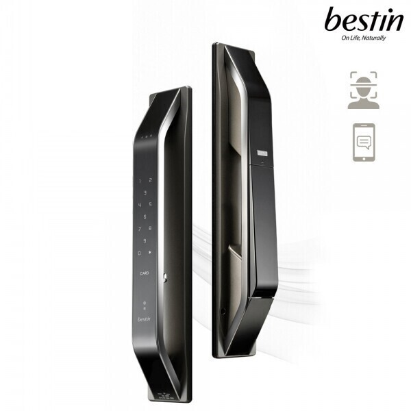

BESTIN 주문을 완성하라
스승 도사가 남긴 생활 주문을 찾아 집을 지켜주세요.
AI 매니저 소개
“안녕하세요! 저는 BESTIN AI 도사입니다. 도사의 유언에 따라 주문을 완성할 준비가 되셨나요?”
- 모든 퍼즐은 현실과 연결된 스마트 기기 체험을 기반으로 합니다.
- 힌트를 잘 읽고 순서대로 진행하세요.
- 완료 후에는 종합 결과와 칭호를 확인할 수 있습니다.
빛의 주문 – 스마트 전등
거실등 밝기를 정확한 값으로 맞추세요.
“주작은 노을빛을 좋아한다. 밝기 70%로 맞추라.”

철마의 주문 – 주차 기록
월패드에서 차량 출차 시간을 확인하고 4자리 자물쇠를 풀어보세요.
“철마가 떠난 시각을 기억하라.”
15:32 - 세탁기사 입차
17:45 - 가족차 출차
19:27 - 설치기사 밴 출차
숨결의 주문 – 스마트 콘센트
콘센트 전력을 0W로 만들고 3초 유지하세요.
“현무의 숨을 멈춰 0이 3번 이어지면 길이 열린다.”
100W
마지막 문지기 – 도어락 로그
도어락 로그를 확인하여 가장 늦게 귀가한 사람을 찾으세요.
“수요일에 가장 늦게 귀가한 자가 열쇠를 가지고 있다.”

월 18:30 – 스승 A 귀가
수 21:10 – 배우 B 귀가
수 22:05 – 배우 C 귀가
결과
엔딩 – 주문의 완성
☆
☆
☆
☆
☆